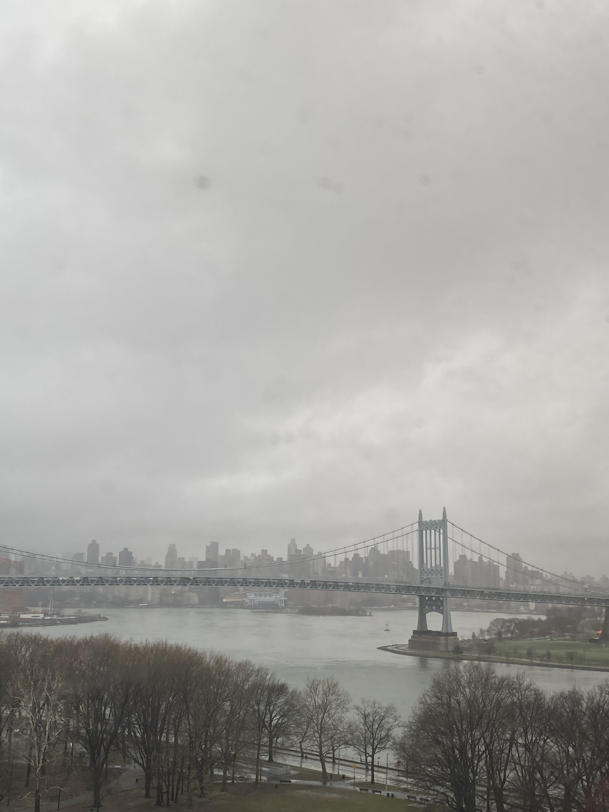

Adventure Report
I am the type of person who routinely gets anxious. I can feel it in my body, in the shiver of my teeth, the pins and needles that rake over my thighs and prick at my arms. In the quest to build my independence, I took a train to New York City by myself to visit my sister. No one to talk to, no one to reassure me for a four and a half hour ride to a city I had only visited once prior.
In the station, I waited as patiently as my shaking legs could muster. I balanced my favorite, extremely well read and worn book on my lap. A girl came up to me and told me she liked my outfit and overall “vibe.” I remember blushing a lot and thanking her, before looking down to contemplate my not-so-form-fitting jeans and sweatshirt dotted with holes. It must have been the guitar that tipped her off.
The waiting was the worst part. Habitually, I worried and it chased away my appetite. I worried my guitar would get damaged, that I wouldn’t be able to lift my suitcase to the compartment above and be subjected to the devastating panic that is asking a stranger for help. Of course, once I sat down in my hurriedly picked seat and put my earbuds in, I felt a wave of relief wash over me. I remember feeling this almost palpable weight to the moment as I tried to decide what to listen to. I needed music that felt right to me, something that spoke to me and reflected what I was feeling. As I cycled through the songs, I made a mental list of which ones made my chest swell with a feeling of contentment. I put those in a folder in my mind and tucked them away to make into a “train music” playlist later.
It felt as if there was a unique symphony of smells that swirled around me, never ceasing. It was in the fake plastic leather scent of the seats, the passing whiff of someone’s shampoo as they turned their head, the strong black coffee I could smell a car away as a person carefully carried it back to their seat. Unconsciously, I found myself thumbing the sleeve of my worn leather jacket and relishing in the comfort it gave me. With each stroke I was attempting to smooth my anxiety away, like I had my own personal worry stone. Little by little, it began to dissipate.
Moving swiftly through the suburbs made me think of other passengers: where these people are coming from, who or what they’re going home to. I watched someone slump sideways into their car after not-so-gracefully loading in their luggage. I observed a small reunion with a tender embrace. I saw a couple exit the train slowly, looking around the outdoor station aimlessly and almost clueless. I reveled in this unique form of people watching; a setting I don’t experience often. I felt appreciative that I could sit with these thoughts and just keep them to myself, instead of turning to a companion and explain my theories, stories, and thoughts.
Towards the end of my tiny adventure, I watched the sunset from the train as it framed the skyscrapers. I timed the view with a queue of my favorite songs to craft the moment. Music still holds that weight for me, and I think it always will. I let the ones I listened to fill me completely, make me capable and whole. They made me feel like big inevitable things to come weren’t as scary as maybe I had made them out to be. If I could do this thing by myself, maybe there were other things I could do too. I felt like I had taken a step towards opening the door to my own independence that I didn’t previously have the key to.
When I exited the train, I waited and prepared for the anxiety that I felt before I boarded to return. I waited, and I waited, and I waited, and it never came.
